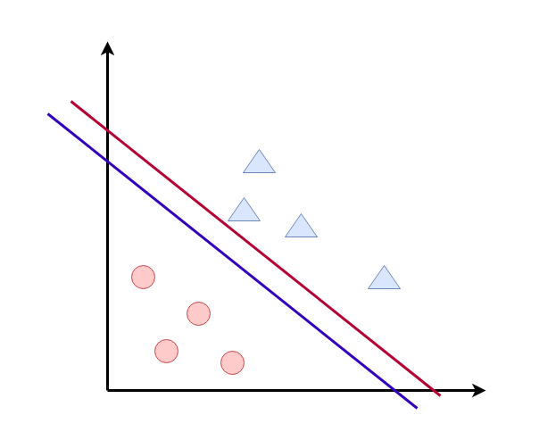
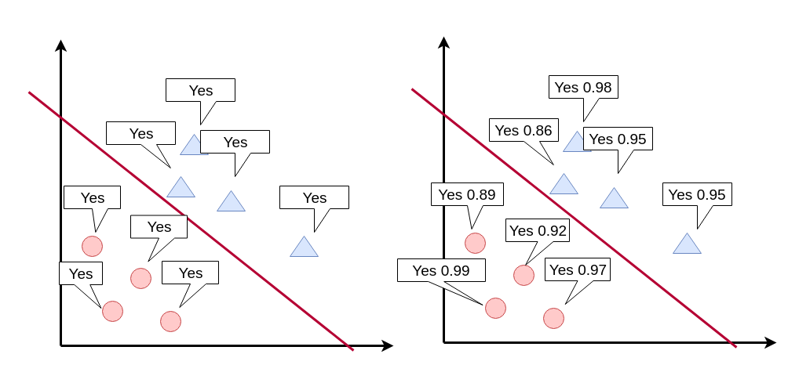
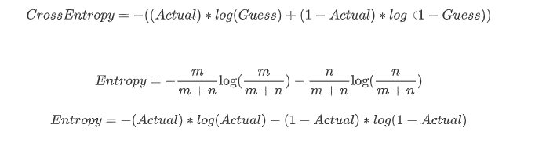
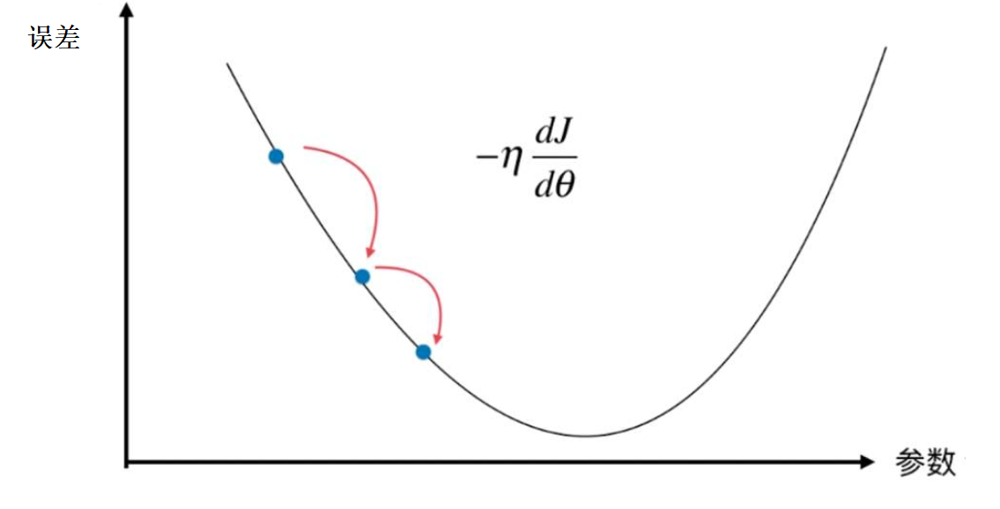
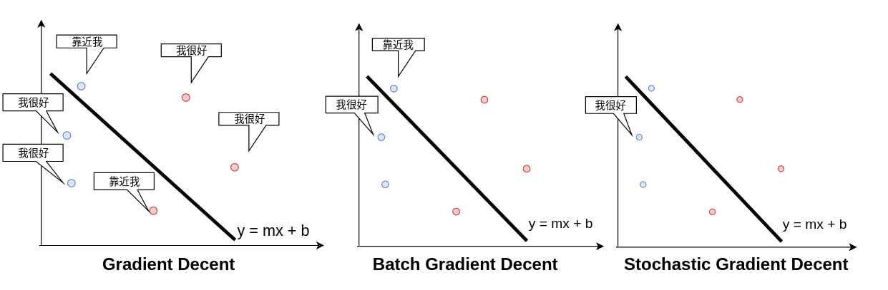
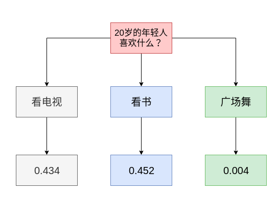
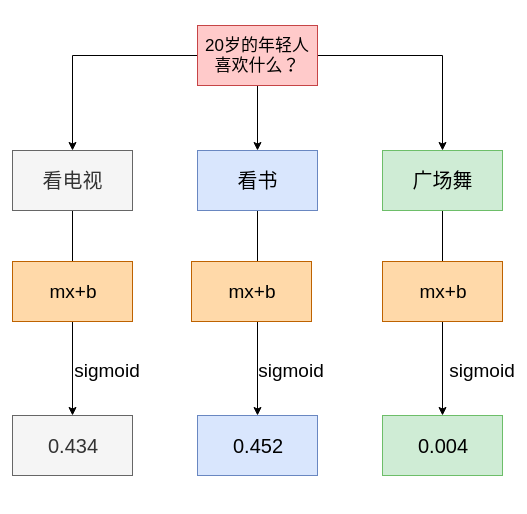
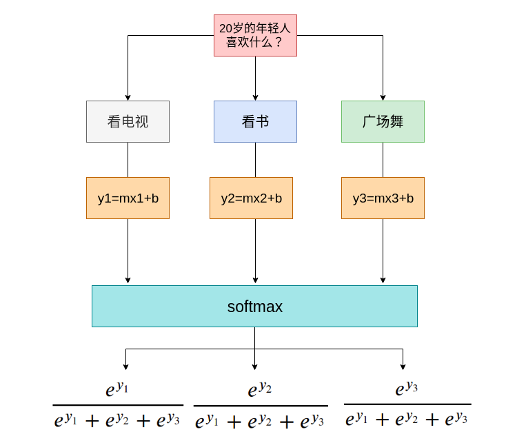

tensorflow入门
TensorFlow介绍¶
谷歌官方推出的深度学习框架, TensorFlow是目前市场占有率最高、最受欢迎的深度学习框架, 目前最新版是2.3的版本, 2.x版本简洁,易用.
TensorFlow 2.x安装¶
#创建虚拟环境
conda create -n tfenv python=3.7
#激活虚拟环境
conda activate tfenv
#更新安装环境pip
conda install pip
#安装依赖
pip install tensorflow
#更新conda环境的jupyter notebook
conda install jupyter notebook
版本检查¶
#检查TensorFlow的版本
import tensorflow as tf
tf.__version__
TensorFlow常见模块¶
tf.：包含了张量定义，变换等常用函数和类。tf.data：输入数据处理模块，提供了像tf.data.Dataset等类用于封装输入数据，指定批量大小等。tf.image：图像处理模块，提供了像图像裁剪，变换，编码，解码等类。tf.keras：原Keras 框架高阶 API。包含原tf.layers中高阶神经网络的各种层。tf.math：数学计算模块，提供了大量数学计算函数。tf.saved_model：模型保存模块，可用于模型的保存和恢复。tf.nn：提供用于构建神经网络的底层函数，以帮助实现深度神经网络各类功能层。
什么是误差函数¶
- 让不开心的点最少
- mse 最小均方差
- crossentropy 交叉熵
感知机算法就是降低误差函数值¶
我们来分析感知机的mse， 期待值Guess是1，真实值Actual是1,期待值Guess是0，真实值Actual是0
1-1=0 和 0-0=0 ,如果点（p，q）分类正确， 什么事情都不做
期待值Guess是1，真实值Actual是0 , 1-0 =1
分类为苹果，实际上是香蕉。 线往下移。 学习速率为\alpha , (w_{1},w_{2},b) 加上 (\alpha*p,\alpha*q,\alpha*1)
- (w_{1}=w_{1}+\alpha*p,w_{2}=w_{2}+\alpha*q,b=b+\alpha*1)
期待值Guess是0，真实值Actual是1, 0-1=-1
分类为香蕉，实际上是苹果。 线往上移。 学习速率为\alpha , (w_{1},w_{2},b) 减去 (\alpha*p,\alpha*q,\alpha*1)
- (w_{1}=w_{1}-\alpha*p,w_{2}=w_{2}-\alpha*q,b=b-\alpha*1)
更准确的误差描述¶
误差函数是评估，模型好坏的一种标识

这两种误差函数在分类上面，显得无能为力， 分类的结果只有正确或者错误， 按照这种结果来说， 红色和蓝色线都是正确的分类线，都是正确的模型，但是红色更好 还是蓝色更好呢？

每种类型的数据点，离红线越远，置信概率越大，误差越小。
那么我们如何用数学的角度，定义一个公式来描述，误差函数呢？
数据准确度¶
小明： 中国足球明天出线的概率是 80%
小刚： 中国足球明天出线的概率是 50%
问：这两个模型，这两个预测哪个更准确?
如果中国队第二天出线了，小明的模型好，
如果中国队第二天没出线，小刚的模型好。
交叉熵¶
预测分布越接近真实的分布，交叉熵越小，当预测分布等于真实分布时，交叉熵最小，此时交叉熵的值等同于熵。所以，交叉熵提供了一种衡量两个分布之间差异大小的方式，常用来作为神经网络的损失函数。当预测分布跟真实分布（人工标注结果）相差很大时，交叉熵就大；当随着训练的进行预测分布越来越接近真实分布时，交叉熵就逐渐减小。

小明： 深圳明天晴天的概率是 80%
小刚： 深圳明天晴天的概率是 50%
天气预报预测的 明天晴天的概率是65%， 小明和小刚谁预测的准确度高
谁的交叉熵小，谁的预测准确性高
-0.65 log(0.8) - 0.35log(0.2) = 0.708346577706171
-0.65 log(0.5)-0.35 log(0.5) = 0.693147180559945
天气预报预测的 明天晴天的概率是1， 小明和小刚谁预测的准确度高
-1 log(0.8) -0log(0.2) =0.22314355131421
-1 log(0.5) -0log(0.5) = 0.693147180559945
误差函数与梯度¶
梯度就是函数误差增加最快的方向。
梯度下降就是沿着梯度的反方向，下山的过程。

梯度下降的优化策略¶
- gradient descent
所有的点都要参与计算mse，来确定更新的m和b
- mini-batch gradient descent
一部分点参与计算mse，来更新m和b
- stochastic gradient decent
一次只观察一个点，来更新m和b

通常在实际操作中会用batch或者stochastic的梯度下降，全套数据梯度下降，计算量太大，收敛速度过慢。
代码实战-训练或运算¶
- 0, 0 ->0
- 0, 1 ->1
- 1, 0 ->1
- 1, 1- >1
from tensorflow.keras.models import Sequential
from tensorflow.keras.layers import Dense,Activation
import numpy as np
X = np.array([
[0,0],
[0,1],
[1,0],
[1,1]
])
y = np.array([0,1,1,1])
# 创建一个顺序模型
model = Sequential()
# 第一层 两个输入的数据 一个输出的数据
model.add(Dense(1, input_shape=(2,)))
# 第二层 激活函数
model.add(Activation('sigmoid'))
model.summary()
# 设置模型的训练参数, 误差函数 loss, 优化算法 optimizer
model.compile(optimizer='adam',loss='binary_crossentropy',metrics=['accuracy','mse'])
model.fit(X,y,epochs=10000,batch_size=4)
# 使用模型进行预测
model.predict(X)
代码实战-训练异或运算¶
- 0,0 ->0
- 0,1 ->1
- 1,0 ->1
- 1,1 ->0
import numpy as np
from tensorflow.keras.models import Sequential
from tensorflow.keras.layers import Dense, Activation
# X 是特征向量的集合
X = np.array([[0, 0], [0, 1], [1, 0], [1, 1]], dtype=np.float32)
# y 是结果特征向量的集合
y = np.array([0,1,1,0], dtype=np.float32)
# 创建一个顺序模型
model = Sequential()
# 第一层 两个输入的数据 一个输出的数据
model.add(Dense(1, input_shape=(2,)))
# 第二层 激活函数
model.add(Activation('sigmoid'))
model.summary()
# 优化算法选adam
model.compile(loss='binary_crossentropy', optimizer='adam',metrics=['accuracy','mse'])
print(model.summary())
# 训练
model.fit(X, y,epochs=10000,batch_size = 4)
#预测
model.predict(X)
一层神经网络不够了，一个神经元解决不了非线性分类问题。
from tensorflow.keras.models import Sequential
from tensorflow.keras.layers import Dense, Dropout, Activation
from tensorflow.keras.optimizers import SGD
import numpy as np
X = np.array([
[0,0],
[0,1],
[1,0],
[1,1]
])
y = np.array([0,1,1,0])
# 创建一个顺序模型
model = Sequential()
# 第一层 两个输入的数据 一个输出的数据
model.add(Dense(8, input_shape=(2,)))
model.add(Activation('relu'))
model.add(Dense(1))
# 第三层 激活函数
model.add(Activation('sigmoid'))
model.summary()
优化算法的选择¶
参考文档： https://keras.io/api/optimizers/
'sgd': SGD'rmsprop': RMSprop'adagrad': Adagrad'adadelta': Adadelta'adam': Adam'adamax': Adamax'nadam': Nadam'tfoptimizer': TFOptimizer
from tensorflow.keras.optimizers import SGD
sgd = SGD(lr = 0.1)
model.compile(optimizer=sgd,loss='binary_crossentropy',metrics=['accuracy','mse'])
model.fit(X,y,batch_size=4,epochs=2000)
model.predict(X)
关于优化算法的原理和手工实现，可以参考我们在b站视频
https://www.bilibili.com/video/BV1Pt4y1Q7xc
epochs ,iterations, batches¶
- epochs ： training data 正向/反向 传播一遍，是一个epochs ，对应单个神经元来讲， 就是实现一次全数据集的梯度下降。epochs可能需要上千次，或者上万次。
- batches：一次加载梯度下降的数据，batches数据量越大，内存开销越大，但是拟合程度越好，训练的越慢； batches越小，内存开销越小，拟合程度越低，训练的快，如果batches=1 就是sgd（stochastic gradient decent） ， 一般我们倾向使用mini-batches gradient decent。
- iteration： 非常容易混淆的概念，其实非常简单，就是一个epochs，需要循环几次，跟你的batches size有密切关系，如果batches size 等于数据集合的大小，那么1个iteration就训练了一个epochs， 如果1000条数据，每个batches是10，那么就需要100个iteration才能完成一个epochs
loss 和 accuracy¶
准确率： 分类正确的数据条数除以总的数据条数。
loss是误差函数评估的模型。
以0.6的概率决策边界为例
模型（0.7, 0.3)和模型（0.99， 0.01）的预测准确率是一样的，输出都是（1,0） 但是相比来说，第二个模型的loss会更底一点。
loss和accuracy提供的信息维度是不一样的， 但他们之间是有相互关系的。如果loss值变大， 分类的精确度肯定会变差。
loss 是父母给我们报了一堆辅导班，辅以棍棒或是糖果优化算法，诱导我们通过辅导班增强自己的能力，减少我们的能力值与辅导班声称的能力值之间的差距。accuracy 则是我们的高考成绩。
多分类回归¶
二分类回归，解决的是两个分类的问题，类似判断题
多分类回归，解决多种情况分类的问题，类似选择题
例如：
根据一个人收入水平和工作情况， 预测他买什么类型的车 ?
- 福特
- 宾利
- 奥迪
- 宝马
根据一个人的年龄，预测他买什么类型的手机？
- 苹果
- 安卓
- 非智能机
根据你手写的动作姿势，预测你写的什么字？
从二分类到多分类¶
| 年龄 | 喜好 |
|---|---|
| 5 | 看电视 |
| 15 | 看电视 |
| 25 | 读书 |
| 35 | 读书 |
| 45 | 读书 |
| 55 | 广场舞 |
| 65 | 广场舞 |
数据编码方案1:
| 年龄 | 喜好 | 编码 |
|---|---|---|
| 5 | 看电视 | 1 |
| 15 | 看电视 | 1 |
| 25 | 读书 | 2 |
| 35 | 读书 | 2 |
| 45 | 读书 | 2 |
| 55 | 广场舞 | 3 |
| 65 | 广场舞 | 3 |
数据编码方案2： one hot encoding (独热编码)
| 年龄 | 喜好 | 是否喜欢看电视 | 是否喜欢读书 | 是否喜欢广场舞 |
|---|---|---|---|---|
| 5 | 看电视 | 1 | 0 | 0 |
| 15 | 看电视 | 1 | 0 | 0 |
| 25 | 读书 | 0 | 1 | 0 |
| 35 | 读书 | 0 | 1 | 0 |
| 45 | 读书 | 0 | 1 | 0 |
| 55 | 广场舞 | 0 | 0 | 1 |
| 65 | 广场舞 | 0 | 0 | 1 |
思考：
-
为什么不用第一种方案
-
第二种方案有什么好处
复杂问题简单化，大问题，拆分成小问题

边际概率和条件概率¶
0.434 是独立，是想看电视的概率， 不是想看电视同时不想看书，不想跳广场舞的概率。
在看电视的同时，可能还可能想看书，看电视
我们需要的是一个条件概率，希望计算的是，看电视，不看书，不跳广场舞。
条件概率的和应该是1， 独立边际概率的和可能不是1
条件概率 类似扔筛子。 每个面的概率的和加起来是1. 如果你摇到了1号点， 这个概率意思是，是1号点，不是2,3,4,5,6
softmax¶
把边际概率转换为条件概率
从sigmoid函数到 softmax函数


通用误差函数选择¶
# 多分类
model.compile(optimizer='rmsprop',
loss='categorical_crossentropy',
metrics=['accuracy'])
# 二分类
model.compile(optimizer='rmsprop',
loss='binary_crossentropy',
metrics=['accuracy'])
# 回归
model.compile(optimizer='rmsprop',
loss='mse')